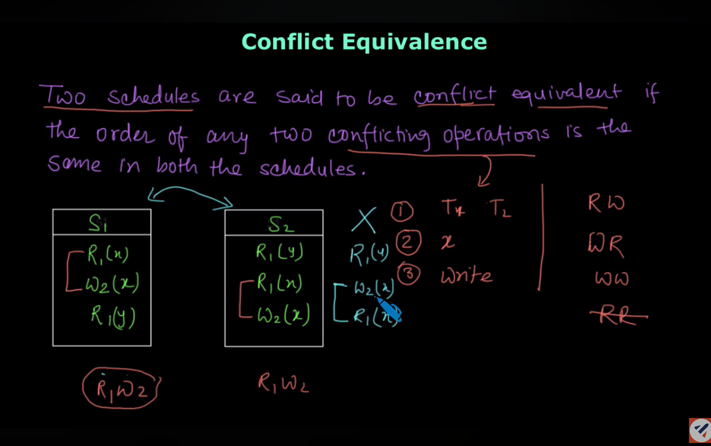
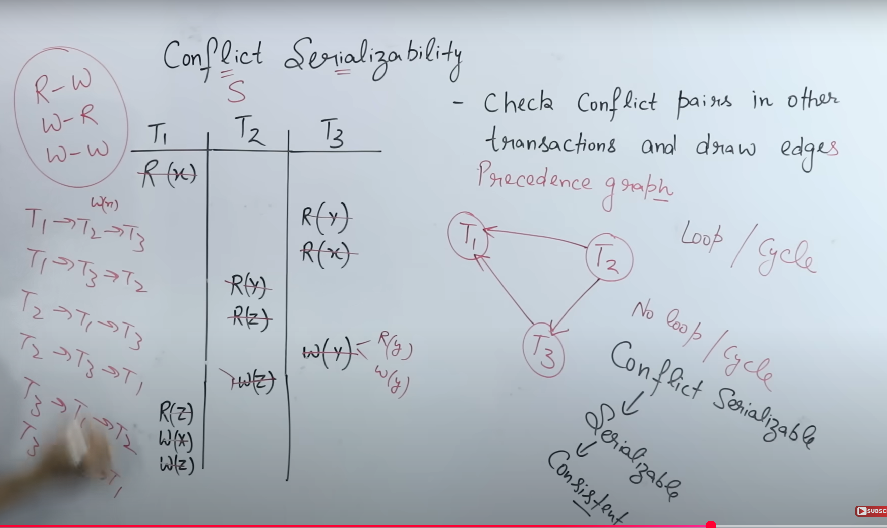

🔄1. Serialization in DBMS
Serialization ensures that the outcome of executing concurrent transactions is the same as if the transactions were executed one after another (serially).
🧠 Example: Banking Transaction
Consider two transactions on Account A (initially ₹1000):
- T1: Deposit ₹500 into Account A
- T2: Multiply Account A by 2
Serial Execution (Correct):

T1 → T2 execution: Step 1: T1 reads A = ₹1000 Step 2: T1 writes A = ₹1000 + ₹500 = ₹1500 Step 3: T2 reads A = ₹1500 Step 4: T2 writes A = ₹1500 × 2 = ₹3000 Final Result: ₹3000 ✅
Non-Serial Execution (Incorrect):

Concurrent execution problem: Step 1: T1 reads A = ₹1000 Step 2: T2 reads A = ₹1000 (before T1 commits) Step 3: T1 writes A = ₹1500 Step 4: T2 writes A = ₹2000 (overwrites T1's work) Final Result: ₹2000 ❌ (Lost T1's deposit!)
⚔️ 2. Conflict Equivalence & Conflict Serializability (Simple English Explanation)
🧮 What are Conflicting Operations?
Two operations conflict if their relative order must be preserved. They conflict when:
- They belong to different transactions
- They access the same data item.
- **At least one of the operations is a Write operation.
| Operation 1 | Operation 2 | Conflict? | Reason |
|---|---|---|---|
| Read(A) | Read(A) | No | Reading data does not change it (Read-Read is safe). |
| Read(A) | Write(A) | Yes | Read-Write conflict. The read may miss the write. |
| Write(A) | Read(A) | Yes | Write-Read conflict. The read may see an incorrect value. |
| Write(A) | Write(A) | Yes | Write-Write conflict. The final value depends on the order. |
🔄 Conflict Serializability
A schedule is conflict serializable if it is conflict equivalent to any serial schedule. You check this using the Precedence Graph method.
🧠 Key Takeaways (Tips)
- Conflict = different transaction + same data + at least one write
- Use the Precedence Graph: nodes are transactions.
- If there is No cycle in the graph =conflict Serializable ✅
- If there is a cycle in the graph = Not conflict Serializable ❌
- if schedule is conflict Serializable, then convert into serial-schedule by checking the in-degree of each transaction in the precedence graph. lower to Higher(start with 0->1->2)
👁️ View Serializability (Simple English)
📌 Definition:
A schedule is view serializable if its result is exactly the same as the result of some serial schedule—including the values that transactions read and write.
🔍 3 Main Conditions to Check:
- Initial Read Same: Each transaction reads the same initial value in both the original and serial schedule.
- Read From Same Transaction: If a transaction reads a value written by another transaction, that relationship must be preserved in the serial schedule.
- Final Write Same: The transaction that performs the final write on each data item must be the same in both the original and serial schedule.
📚 Difference between Conflict & View Serializability:
| Feature | Conflict Serializability | View Serializability |
|---|---|---|
| Check Method | Easy (using the graph). | Difficult (checking every possible serial order). |
| Strictness | More strict (focuses on operation order). | Less strict (focuses on the final result). |
| Allowable Schedules | Fewer schedules are allowed. | More schedules are allowed. |
| Practical Use | Most practical database systems use this. | More theoretical. |
👓 Simple Tip:
- **Conflict Serializable:** Use the graph, no cycle = safe.
- **View Serializable:** The final outcome (all reads and writes) must match a serial order.
- **All Conflict Serializable schedules are also View Serializable**, but not all View Serializable schedules are Conflict Serializable.
🔐3. Locking Protocols
Locking Protocols concurrency control ke liye use kiye jaate hain, jisse transactions safe aur isolated rehte hain.
🔄 Shared (S) and Exclusive (X) Locks
Database me data access karne ke liye do tarah ke locks hote hain:
- Shared Lock (S): Sirf read ke liye. Multiple transactions ek saath Shared Lock le sakte hain.
- Exclusive Lock (X): Read + Write dono ke liye. Jab tak Exclusive Lock hai, koi aur transaction access nahi kar sakta.
📌 Lock Compatibility Matrix
Yeh matrix batata hai ki agar ek lock laga hua hai, to doosra lock lag sakta hai ya nahi:

- Agar Shared lock laga ho, toh ek aur Shared lock lag sakta hai (✅).
- Agar Exclusive lock laga ho, toh koi bhi naya lock nahi lag sakta (❌).
- Exclusive access tabhi milega jab koi aur transaction Q par access na kar raha ho.
🔄 Locking Protocol Example
Neeche diye gaye diagram me do transactions hain:
- T32 do baar Shared Lock (S) le raha hai aur sirf read kar raha hai.
- T33 Exclusive Lock (X) le raha hai, jisse read + write dono allowed hai.
- Agar T32 ne pehle Shared Lock le liya ho, toh T33 ko Exclusive Lock tab tak nahi milega jab tak T32 unlock nahi karta.
⚠️ Problems with Basic Locking
- Deadlock: Dono transactions ek dusre ka wait karte rahte hain.
- Starvation: Ek transaction ko baar-baar ignore kiya jaata hai.
- Cascading Rollback: Ek transaction fail ho gaya, jiska data kisi ne read kiya ho, toh sab rollback karne padte hain.
- Inconsistent Analysis: Jab read ho raha ho aur data simultaneously update bhi ho raha ho.
🔒4. Two-Phase Locking (2PL)
Two-Phase Locking ek aisa protocol hai jo conflict serializability ensure karta hai by splitting transaction locking activity into two phases:
📈 Growing Phase
Transaction naya lock le sakta hai (Shared ya Exclusive), lekin release nahi kar sakta.
📉 Shrinking Phase
Transaction lock release kar sakta hai, lekin naya lock acquire nahi kar sakta.
🧠 Example: 2PL in Action
Transaction T1 following 2PL:
📈 Growing Phase:
- Lock-S(A)
- Read(A)
- Lock-X(B)
- Write(B)
📉 Shrinking Phase:
- Unlock(A)
- Unlock(B)
- ❌ Cannot acquire any new lock now!
⚠️ Real Problems in Locking
🔁 Deadlock Example:
T1: Lock-X(A) T2: Lock-X(B) T1: Wait for B 🔒 T2: Wait for A 🔒 // Deadlock! T1 and T2 are waiting for each other forever
Explanation: T1 ne A lock kiya, T2 ne B lock kiya. Ab dono ek dusre ka wait kar rahe hain, jo kabhi release nahi hoga.
🚫 Starvation Example:
T1: Lock-X(Q) T1: Long transaction... (hold X lock for long time) Meanwhile: T2: Wants Lock-S(Q) T3: Wants Lock-S(Q) T4: Wants Lock-S(Q) // All waiting again and again due to T1
Explanation: T1 bahut time tak Exclusive lock rakhta hai. Is wajah se baaki sab (T2, T3, T4) wait karte rehte hain — yeh hai starvation.
💥 Irrecoverability Example:
T1: Write(A) T2: Read(A) // ⚠ Uncommitted data from T1 T1: Crash 💀 // Now T2 has used invalid data
Explanation: T2 ne T1 ke write kiya hua data use kiya, lekin T1 crash ho gaya. Ab T2 ka data bhi galat ho gaya. Yeh irrecoverable situation hai.
🌊 Cascading Rollback Example:
T1: Write(A) T2: Read(A) T3: Read(A) T1: ❌ Abort (Crash or Rollback) // T2 and T3 must also Rollback!
Explanation: T2 aur T3 ne T1 ke data ko read kiya, jo ab rollback ho gaya. Ab T2 aur T3 bhi rollback karne padenge — isey bolte hain cascading rollback.
✅ Advantages of 2PL:
- Guarantees conflict serializability
- Prevents lost updates and dirty reads
- Widely used in real-world DBMS like MySQL, Oracle
❌ Limitations of 2PL:
- Deadlocks: Still possible due to lock waits
- Cascading Rollbacks: Happen if one transaction reads uncommitted data
- Starvation: Long-running transactions can block others
- Reduced Concurrency: Overall system slow ho sakta hai
🛡️5. Strict Two-Phase Locking (Strict 2PL)
Strict 2PL is an enhanced version of 2PL that solves the cascading rollback problem.
🧠 Example: Strict 2PL vs Regular 2PL
Regular 2PL:
T1: Lock-X(A), Write(A), Unlock(A), ... , Commit
T2: Lock-S(A), Read(A), ...
// T2 might read uncommitted data if T1 aborts later
Strict 2PL:
T1: Lock-X(A), Write(A), ..., Commit, Unlock(A)
T2: Lock-S(A), Read(A)
// T2 can only read after T1 commits
✅ Advantages of Strict 2PL:
- Prevents cascading rollbacks
- Ensures recoverability
- Simplifies recovery procedures
- Guarantees both conflict serializability and recoverability
⚠️ Trade-offs:
- Increased blocking time (locks held longer)
- Potential for more deadlocks
- Reduced concurrency compared to regular 2PL
⏰6. Timestamp Ordering Protocol
Timestamp Ordering ek aisa protocol hai jisme locking ka use nahi hota. Har transaction ko ek unique timestamp milta hai, aur execution isi order me hona chahiye.
📋 How It Works:
Har data item X ke saath 2 timestamps maintain hote hain:
- R-timestamp(X): Sabse latest transaction jiske ne X ko read kiya.
- W-timestamp(X): Sabse latest transaction jiske ne X ko write kiya.
🔄 Protocol Rules:
📖 For Read Operation by Ti:
if (TS(Ti) < W-timestamp(X)) {
// Ti purana hai aur wo kisi naye transaction ke write ko read kar raha hai
ABORT Ti;
} else {
// Read allow karo
R-timestamp(X) = max(R-timestamp(X), TS(Ti));
}
✍️ For Write Operation by Ti:
if (TS(Ti) < R-timestamp(X) || TS(Ti) < W-timestamp(X)) {
// Ti purana hai aur wo kisi naye transaction ke read/write data ko overwrite kar raha hai
ABORT Ti;
} else {
// Write allow karo
W-timestamp(X) = TS(Ti);
}
🧠 Example: Timestamp Ordering
Assume karte hain 3 transactions hain with timestamps:
T1 (TS = 5)
T2 (TS = 10)
T3 (TS = 15)
Initially:
R-timestamp(A) = 0
W-timestamp(A) = 0
🔹 Step 1: T2 wants to Read(A)
TS(T2) = 10 > W-timestamp(A) = 0 ✅
➤ R-timestamp(A) = 10
🔹 Step 2: T1 wants to Write(A)
TS(T1) = 5 < R-timestamp(A) = 10 ❌
➤ ABORT T1 (older T1 trying to overwrite data read by newer T2)
🔹 Step 3: T3 wants to Write(A)
TS(T3) = 15 > R-timestamp(A) = 10 ✅
➤ W-timestamp(A) = 15
Conclusion: Timestamp protocol ensure karta hai ki execution order conflict-serializable ho, lekin purane transactions ko abort kar diya jaata hai agar woh naya data access karna chahein.
✅ Advantages:
- 💀 No deadlocks (koi wait nahi karta — directly abort hota hai)
- 🔓 No lock management needed
- ✅ Conflict serializability ensure hoti hai
❌ Disadvantages:
- High Abort Rate: Purane transactions baar-baar abort ho sakte hain
- Starvation: Older transactions may never finish
- Overhead: Har data item ke liye timestamps maintain karna padta hai
- Cascading Rollbacks: Agar abort hua, toh doosre dependent transactions bhi rollback ho sakte hain
📋7. Summary & Comparison
| 🛠️ Protocol | 🎯 Purpose | ✅ Advantages | ⚠️ Disadvantages | 📌 Use Case |
|---|---|---|---|---|
| Basic Locking | Control access to data | Simple and flexible | Prone to deadlocks and cascading rollbacks | Small/simple apps with limited concurrency |
| Two-Phase Locking (2PL) | Ensure serializability | Guarantees conflict serializability | Can cause deadlocks and cascading rollbacks | Used in most commercial DBMS (MySQL, Oracle) |
| Strict 2PL | Ensure recoverability | Prevents cascading rollbacks | Reduces concurrency | Systems needing safe recovery (e.g., banking) |
| Timestamp Ordering | Order transactions without locks | No deadlocks, no locking required | High abort rate, starvation possible | Read-heavy or low-write environments |
- ✔️ Serialization ensures correctness during concurrent transactions.
- ✔️ Conflict Serializability is practically used to check schedule safety.
- 🔐 Locking Protocols reduce concurrency to maintain consistency.
- 💡 Strict 2PL is the most common strategy in real-world systems.
- ⏰ Timestamp Ordering offers a lock-free solution but at a cost.